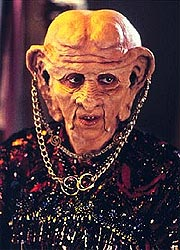
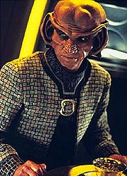
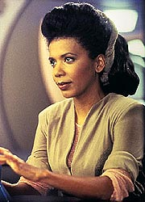
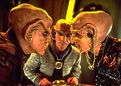
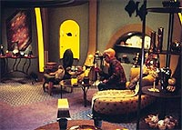

MANCHETE
DO EPISDIO
Roteiristas
sofrem com bizarro conceito
de "comdia sria" com os Ferengis
Episdio
anterior | Prximo
episdio
Sinopse:
Data Estelar:
desconhecida.
O bar do Quark est cheio e o seu dono reclama por no poder contar com a ajuda do seu sobrinho Nog (estudando para os exames da Academia da Frota Estelar) no trabalho. Eis que surge um Ferengi, de nome Brunt, no bar e que pendura um anncio oficial prximo porta e interdita imediatamente o estabelecimento. Brunt uma agente do F.C.A. (uma espcie de Imposto de Renda Ferengi) e avisa Quark que a sua me (de nome Ishka) est sendo acusada de ganhar dinheiro, algo proibido pelas leis Ferengis. Quark, como macho mais velho da famlia, deve ir a Ferenginar resolver a situao. Rom vai com ele.
Os trs Ferengis chegam casa da famlia de Quark em seu planeta natal Ferenginar. Ishka confirma as acusaes e alm disto est vestida e se dirige verbalmente a Brunt. Mais duas ofensas segundo a lei Ferengi. Quark tem trs dias para obter uma confisso e o retorno do dinheiro obtido ou sua me ser vendida como escrava e ele ter que indenizar o F.C.A. pelos seus crimes. Brunt parte. Mais tarde, Ishka diz a Rom que no vai confessar por princpio e no pelo dinheiro. Ela no acha errado uma fmea Ferengi fazer fortuna e ela se considera to (ou mais) habilidosa nos negcios quanto qualquer macho Ferengi.

Na estao, Jake continua com a idia de que seu pai deve conhecer a sua amiga capit de cargueiro, de nome Kasidy Yates, que est na estao no momento. Ben acaba visitando Yates em um dos hangares de carga e fica com boa impresso, marcando um encontro para um caf no dia seguinte.
Em Ferenginar, Quark faz algumas pesquisas e descobre que sua me no ganhou apenas trs barras de Latinum, como admitiu inicialmente. Ela operou inmeras transaes financeiras sob diferentes codinomes em toda a Aliana Ferengi. Toda a fortuna pessoal de Quark no suficiente para cobrir tal soma. Se sua me no confessar ele est arruinado. Ishka confirma tal achado e acusa Quark de estar com cimes de suas habilidades, assim como o seu falecido pai sentiu um dia. Quark fica furioso e parte para o escritrio do F.C.A. para contar sobre o "Imprio Financeiro" da sua me. Rom tenta impedir e os dois "saem no tapa". Ishka acaba apartando a briga e Quark sai decidido a contar tudo a Brunt.
Enquanto espera para falar com Brunt, Rom alcana Quark e diz que sua me mudou de idia e concordou em fazer uma diviso "meio a meio" dos lucros em troca do silncio dele. Quark muda de idia e volta para ver Ishka. Entretanto, Ishka no prometeu tal coisa, Rom mentiu para colocar Quark e a sua me juntos de novo. Os dois conversam e ela diz que Rom sempre foi parecido com o pai, ruim nos negcios. Ishka diz que apesar disto amava o falecido Keldar e tambm ama Quark, que herdou o seu tino com os negcios, segundo ela. Quark fica tocado com isto e a sua me acaba concordando em fazer a confisso e devolver a fortuna que ganhou, para felicidade de Quark.

Em DS9, o encontro entre Ben e Kasidy parece meio morno e ela chega a dizer que se esqueceu de um outro encontro e tem que se retirar mais cedo. Sisko fica desapontado at que ela explica que o tal "encontro" se resumia a escutar uma mensagem do seu irmo mais novo. Tal mensagem continha a transmisso de um jogo de beisebol dele. Sisko fica entusiasmado por Yates conhecer tambm o jogo e vai assistir partida com ela. Completamente ligados.
Ishka faz a confisso (sem roupas) e devolve os seus lucros na presena de Brunt. Quark fica aliviado e vai se retirando sem esquecer de "molhar a mo" do agente do F.C.A para que ele mantenha o caso como confidencial. Ao final Rom se despede de sua me sozinho e os dois partilham o segredo de que Ishka devolveu somente um tero de sua imensa fortuna adquirida.
Comentrios:
O fetiche de Ira Behr pelos Ferengis parece atingir propores bblicas aqui. Nesta semana somente o material envolvendo o primeiro encontro de Ben Sisko e da capito Yates carrega alguma qualidade. O retorno ao lar de Quark & Rom se mostra uma das mais grosseiras histrias j produzidas pela srie. Mais detalhes, sem precisar convencer a sua me a produzir uma confisso pelada e ao vivo para o agente do "Leo" (ou equivalente) sobre a sua ltima declarao de renda no processo, nas linhas abaixo.
Primeiro, vejamos o que o episdio teve de bom, que se resumiu aos acontecimentos que levaram ao primeiro encontro de Ben e Kasidy. Curioso que Jake no disse a nenhum dos dois sobre beisebol, ele parecia querer ver a reao dos dois ao descobrirem um lao comum em um esporte to obscuro (ao menos em termos do sculo 24). Tudo ainda mais satisfatrio para o espectador por ser tal esporte uma marca registrada da srie desde o piloto. A breve cena com Dax, alm de legitimamente de acordo com a personagem, parece abrir caminho para
"Facets" daqui a duas semanas, fazendo de Curzon uma lembrana muito viva.

A cena em que Bashir e O'Brien esto tentando pegar o jogo de dardos e so pegos com a mo na massa primeiro por Odo e depois por Sisko o momento mais engraado do episdio. Existe algo definitivamente divertido em O'Brien (o chefe de operaes de DS9) tentando abrir o lacre deixado por Rom. Meio boc, mas engraado. A pequena histria de Sisko se resume a isso, um pouco de verdade entre os personagens, sem maiores surpresas. Um pequeno e bom esforo de Behr e Wolfe. J quanto histria Ferengi...
Nesta temporada j havamos tido "The House of Quark" (milagrosamente bom, considerando a sua arriscada premissa de colocar frente a frente Ferengis e Klingons) e
"Prophet Motive" (que tenta repetir o truque do episdio anterior, agora com os Profetas, e falha miseravelmente) como episdios Ferengis da temporada, sem contar a histria de Nog querer entrar na Frota Estelar, que se tornou um formal arco para o personagem. Fica a questo de por que mais uma comdia Ferengi (por que parece que todo o episdio envolvendo Quark e/ou Ferengis incapaz de ser outra coisa seno "comdia"?). Especialmente uma que tenta ser "sria" (?!).
A histria dos Ferengis em Jornada conhecida de muitos. Originalmente concebidos como os "viles oficiais" de
A Nova Gerao, tal tentativa se mostrou falha logo aps a exibio de
"The Last
Outpost", da primeira temporada da turma de Picard e cia. Ento eles se tornaram uma espcie de "viles trapalhes" para o restante daquela srie. Em
DS9 se fez a promessa implcita de dar maior profundidade a tal raa, incluindo a introduo de um personagem regular na pessoa de Quark. Tal promessa raramente cumprida e as histrias propostas parecem incapazes de fazer algo com alguma substncia com esta estranha cultura que aparentemente formada por rasas caricaturas de um capitalismo terminal.
Alm deste problema crnico de caracterizao da raa (e de Quark) e da orientao de seus episdios, a histria desta semana parece sofrer de um caso terminal de dupla personalidade. Existem de fato duas histrias aqui: um novo esforo da srie em tratar da condio das fmeas Ferengis naquela sociedade e uma histria sobre um filho que aps anos afastado do lar retorna para tentar fechar antigas feridas familiares.

A primeira histria j havia sido tentada em
"Rules of Acquisition", da segunda temporada, e os resultados aqui so ainda piores. A total falta de argumentos relevantes em ambos os lados da questo extremamente incmoda novamente e o ambiente completamente de farsa em que tal discusso se d parece tirar qualquer relevncia (se que existia alguma em primeiro lugar) do tpico discutido. Chega a ser curioso que nem Rom, nem Quark citem a histria com a Ferengi Pel, tendo em vista os bvios paralelos.
A segunda histria at mereceria ser contada. um argumento clssico e j teve ao menos uma verso em
Jornada (em "Family" de
A Nova Gerao). Talvez o problema que os roteiristas encontraram em atacar somente esta histria sria do "porqu" da ida de Quark ao seu lar no planeta natal. Da vieram com a idia de Ishka estar "cometendo crimes" e Quark ter que intervir. O que j abriria o cenrio para o "conflito" (seguindo o possvel pensamento dos roteiristas). E de tal "conflito" nasceu uma sucesso de momentos constrangedores.
Os dilogos aqui, tanto em relao questo de igualdade de direitos entre os sexos em Ferenginar como em relao s questes de relacionamentos familiares so constrangedores. No nvel de: "eu posso ganhar tanto dinheiro quanto qualquer homem", "mame sempre gostou mais de voc do que de mim", "ela nunca mastigou a minha comida" etc.
No bastassem os dilogos, o nefasto humor fsico normalmente presente em comdias Ferengis abunda aqui: a briga entre irmos (com direito a um literal "puxo de orelhas da mame" no final), a nudez de Ishka, insuportveis e repetitivas "piadas" envolvendo "taxas, pedgios, subornos etc.", Rom repetindo "Moogie" o tempo inteiro etc.
E os personagens ficam com a "cereja do bolo". As motivaes de Quark so completamente egostas (e orientadas a Latinum) e imutveis do comeo ao fim. O episdio completamente incapaz de produzir qualquer anlise honesta sobre a personalidade de Quark, quanto mais produzir alguma mudana notvel no personagem ao seu final. Rom incrivelmente tolo, parecendo ter o dom de dizer "a coisa mais absurda na hora mais inapropriada" (TM). Ishka parece vir da mesma "Gaveta de idias" de onde saiu Lwaxana Troi, o que definitivamente no um elogio.

Auberjonois continua um pouco inseguro na direo, apesar do material fornecido (assim como em
"Prophet Motive") ter sido sofrvel. Continua bastante quadrado. Tivemos alguns cenrios interessantes na sede do F.C.A. e o visual de "chuva eterna" de Ferenginar at que tem um certo apelo, mas os valores de produo do episdio so bastante pobres de uma maneira geral.
Brooks foi novamente o destaque entre os regulares e Shimerman fez o que pde, mas o material dado a ele era to ruim que sua atuao acabou sendo insatisfatria (para dizer o mnimo). Os demais cumpriram as cenas residuais com um p nas costas.
Johnson definitivamente algum que merece retornar ficando com o destaque. Combs teve pouco tempo de tela, mas ainda assim foi o mais bem atuado (dentre os Ferengis) presente em cena. Os exageros de Grodnchik custaram novamente a qualidade de sua atuao e Martin fracassou junto com o texto. Green fez somente uma pequena ponta.
Alguns bons exemplos de continuidade: Sisko cozinhando, a habilidade de Rom com trancas, a franquia de vinho de tulaberrie dos Ferengis, a perda do explorador Mekong em
"The Die Is Cast" (e sendo reposto pelo explorador
Rubicon) e a meno de que Nog est estudando para os exames da Academia da Frota Estelar.
"Family Business" mais um pssimo episdio de DS9. A pequena histria de Sisko e Yates tem o seu mrito, mas a parte Ferengi da histria abusa do bom senso, produzindo momentos que so formalmente LIXO! O grosseiro (e bvio) choque entre a execuo estilo "comdia pastelo" e os temas (teoricamente) srios tratados chega a assustar. Como algo to ruim pode ser produzido em primeiro lugar? Behr e Wolfe ficaram devendo a resposta.
Citaes
Jake - "You only cook Hungarian food when you're in a really good mood."
("Voc s faz comida hungria quando est com um timo humor.")
Kira - "You know, the way we go through runabouts, it's a good thing Earth has so many rivers."
("Sabe, do jeito que perdemos exploradores, uma boa coisa a Terra ter tantos rios.")
Rom - "Nog isn't going to destroy the Ferengi way of life; he just wants a job with better hours."
("Nog no vai destruir o modo de vida Ferengi; ele s quer um trabalho com melhor carga horria.")
Trivia:
 Armin Shimerman disse na poca que o roteiro do episdio trazia paralelos entre o personagem Quark e a histria pessoal do ator. Behr disse que o episdio brotou da idia de fazer "algo mais srio" com os Ferengis. O mentor da srie fascinado por ligaes fraternais entre homens e o segmento foi mais uma oportunidade para explorar isto entre Rom e Quark.
Armin Shimerman disse na poca que o roteiro do episdio trazia paralelos entre o personagem Quark e a histria pessoal do ator. Behr disse que o episdio brotou da idia de fazer "algo mais srio" com os Ferengis. O mentor da srie fascinado por ligaes fraternais entre homens e o segmento foi mais uma oportunidade para explorar isto entre Rom e Quark.
A atriz Andrea Martin foi trazida a bordo por indicao do diretor Auberjonois. Martin sofreu ainda mais do que os seus "filhos Ferengis". A maquiagem da sua cabea era mais elaborada que a de um Ferengi mais jovem e ela recebeu maquiagem corporal para as cenas de nudez parcial de Ishka.
Aps preparar a cena em que Rom e Quark brigam, o diretor Auberjonois colocou uma bacia de frutas em uma posio em que ela necessariamente iria ao cho durante a briga. O diretor s no esperava que ela fosse ser arremessada de encontro cmera com um resultado to interessante. A briga dos dois irmos teve a participao dos dubls Dennis Madalone e seu cunhado, George Colucci.
Pela primeira vez visto o mundo natal Ferengi, de nome Ferenginar. Um "ftido pntano em que chove sem parar", segundo uma descrio de cena do corpo do roteiro de Wolfe e Behr. "Slips" foram introduzidas e se juntam a "Strips" e "Barras" no dicionrio monetrio do Latinum.
Primeira apario da me de Quark (com a sua primeira atriz, Andrea Martin) e do planeta natal Ferengi na histria de
Jornada. A personagem retornaria em episdios posteriores de
DS9, s que vivida pela atriz Cecily Adams. So eles: "Ferengi Love
Songs", "The Magnificent Ferengi", "Profit and Lace" e
"The Dogs of War".
Estria de Jeffrey Combs como o personagem Ferengi Brunt, que participa dos seguintes episdios da srie:
"Family Business", "Bar Association", "Body
Parts", "Ferengi Love Songs", "The Magnificent
Ferengi", "Profit and Lace" e "The Dogs of
War". Combs visita o "universo do espelho" como o mirror-Brunt em
"The Emperor's New Cloak". Combs estreou na srie como o aliengena Tiron, em
"Meridian".
Entretanto, o papel que Combs tornou realmente inesquecvel junto aos fs da srie foi do Vorta Weyoun (e seus clones), personagem visto em:
"To the Death", "Ties of Blood and Water",
"In the Cards", "Call to Arms", "A Time to
Stand", "Behind the Lines", "Favor the
Bold", "Sacrifice of Angels", "Statistical
Probabilities", "Waltz", "Far Beyond the
Stars", "Inquisition", "In the Pale
Moonlight", "Tears of the Prophets", "Image in the
Sand", "Shadows and Symbols", "Treachery, Faith and the Great River" (como
dois Weyouns no mesmo episdio), "Penumbra", "'Til Death Do Us
Part", "Strange Bedfellows", "The Changing Face of
Evil", "Tacking Into the Wind", "The Dogs of War" e
"What You Leave Behind". O ator tambm fez o papel do policial Mulkahey em
"Far Beyond The Stars".
Combs tambm participou do episdio "Tsunkatse" da sexta temporada de
Voyager, como Penk. E j ganhou o papel recorrente do Andoriano Shran em
Enterprise e participou de "Acquisition" nesta srie como um Ferengi.
Estria de Penny Johnson como a capito Kasidy Danielle Yates. A personagem se tornaria recorrente na srie (assim como o seu relacionamento com Ben Sisko) e participa dos seguintes episdios de
DS9: "Family Business", "The Way of the
Warrior", "Indiscretion", "For the
Cause", "Rapture", "Far Beyond the
Stars", "The Sound of Her Voice", "Take Me Out to the
Holosuite", "Badda-Bing, Badda-Bang", "Penumbra",
"'Til Death Do Us Part", "Strange
Bedfellows", "The Changing Face of Evil", "The Dogs of War" e
"What You Leave Behind". Participou tambm de "Far Beyond The
Stars", como Cassie.
Penny Johnson Jerald bem conhecida do pblico pelas sries "The Larry Sanders Show" e mais recentemente "24". Sua estria em
Jornada se deu no episdio "Homeward" da stima temporada de
A Nova Gerao (como a personagem Dobara).
O irmo de Kasidy Yates mora em Cestus III (do episdio "Arena" da
Srie Clssica, claramente no mais disputado pelos Gorns) e joga no "Pike City Pioneers" (uma referncia ao capito Pike do piloto original de
Jornada, "The
Cage").
Ficha
tcnica:
Escrito por Ira Steven Behr
& Robert Hewitt Wolfe
Direo de Ren Auberjonois
Exibido em 15/05/1995
Produo: 069
Elenco:
Avery Brooks como
Benjamin Lafayette Sisko
Ren Auberjonois como Odo
Nana Visitor como Kira Nerys
Colm Meaney como Miles Edward O'Brien
Siddig El Fadil como Julian Subatoi Bashir
Armin Shimerman como Quark
Terry Farrell como Jadzia Dax
Cirroc Lofton como Jake Sisko
Elenco convidado:
Penny Johnson como capit Kasidy Danielle Yates
Max Grodnchik como Rom
Jeffrey Combs como Brunt
Andrea Martin como Ishka
Mel Green como um secretrio Ferengi